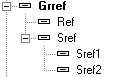
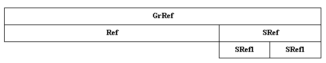

Une caractéristique originale du dictionnaire d'Harmony est de proposer le découpage d'un champ en sous-champs (par exemple, une date peut se décomposer en année, mois, jour), et ainsi de suite.
Exemple de la donnée Référence de Divalto Achats-Ventes qui est décomposée en Référence et Sous-Référence, cette dernière étant encore décomposée.

La même déclaration en langage Diva s'écrit :
1 GrRef 41
2 Ref 25
2 SRef 16
3 SRef1 8
3 SRef2 8
En mémoire ou dans le fichier physique les différentes zones se chevauchent.
